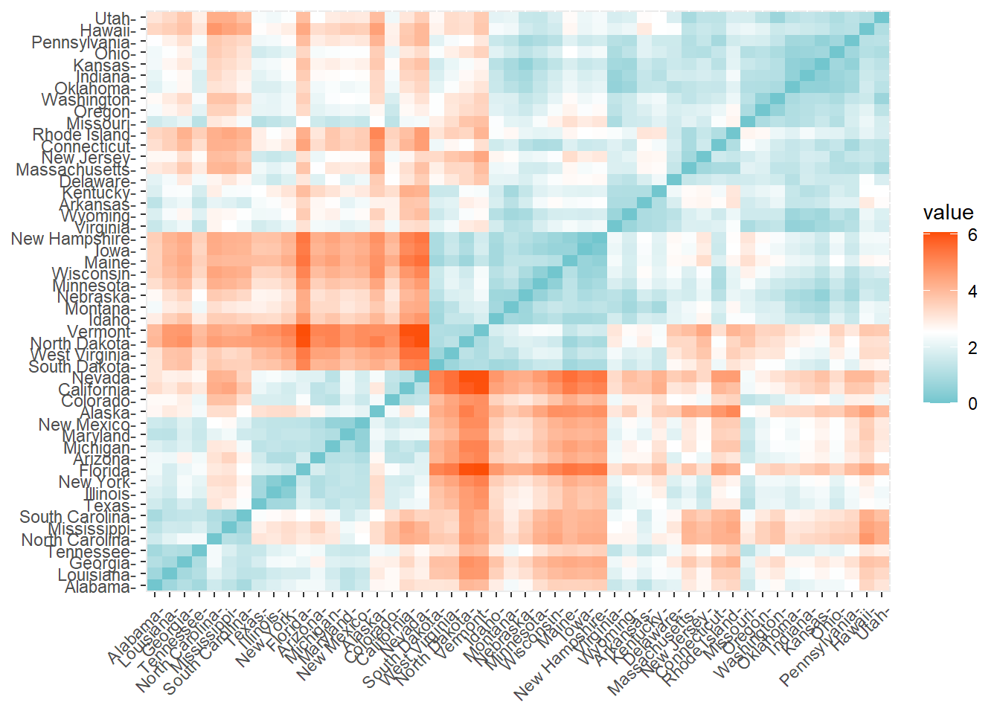
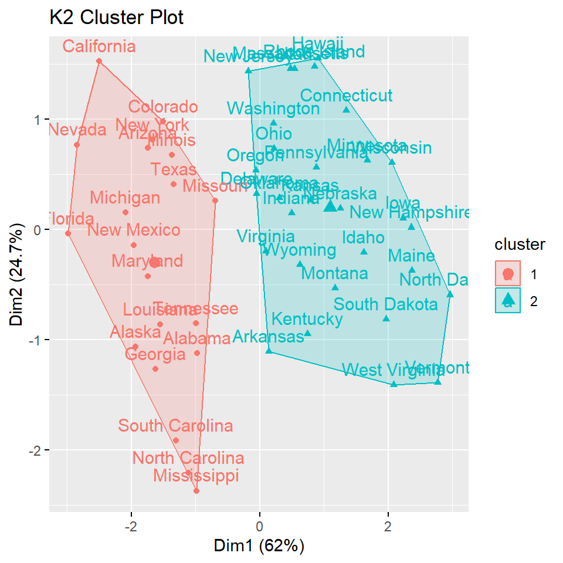
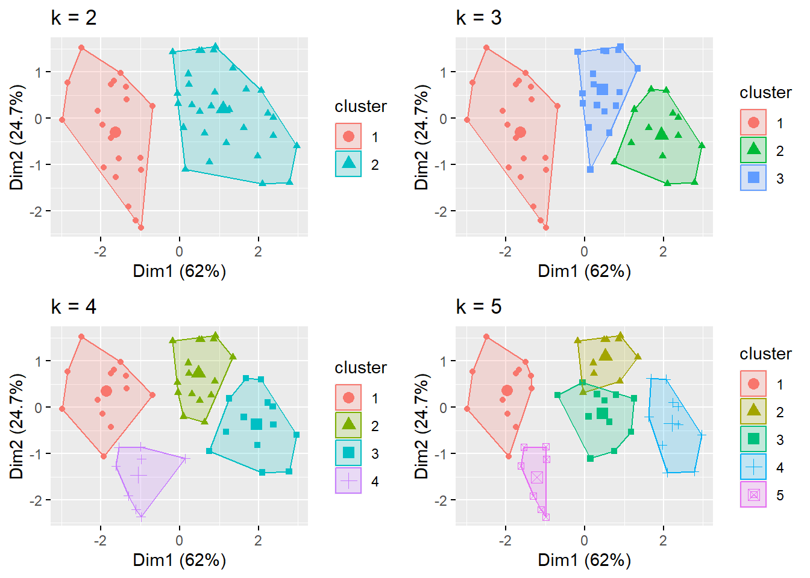
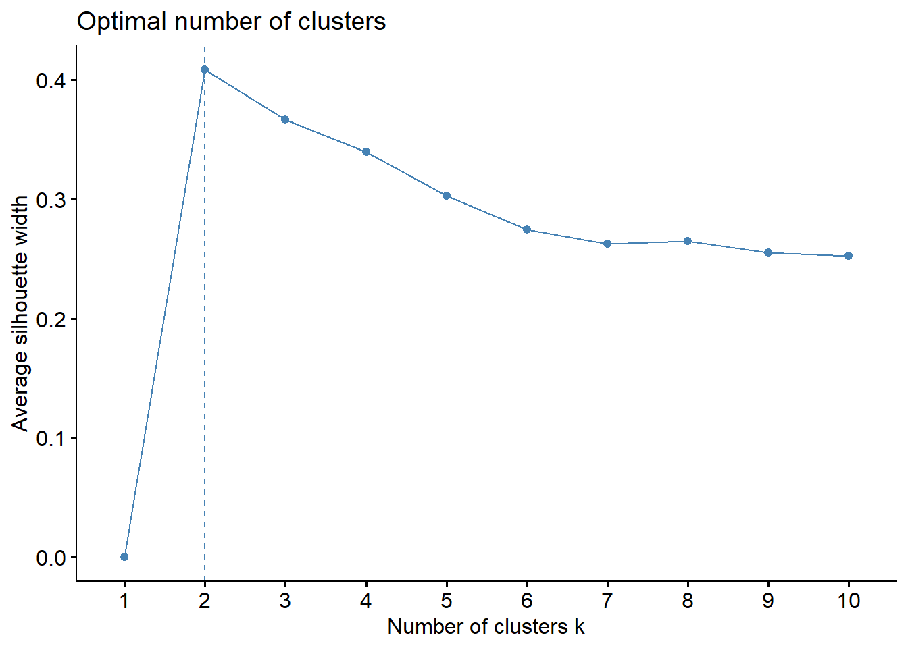

AP2- K-Means Clustering
Rafael Lourenço
2023-12-06
K-Means Clustering
K-means clustering is a technique in which we place each observation in a dataset into one of K clusters.
The end goal is to have K clusters in which the observations within each cluster are quite similar to each other while the observations in different clusters are quite different from each other.
Sources:
https://uc-r.github.io/kmeans_clustering
https://www.statology.org/k-means-clustering-in-r/
https://www.datanovia.com/en/lessons/k-means-clustering-in-r-algorith-and-practical-examples/#data
Dependencies
library(tidyverse) # data manipulation
library(cluster) # clustering algorithms
library(factoextra) # clustering algorithms & visualization
library(htmltools)Dataset
We start by importing the dataset. We’ll be using the built-in R data set USArrests, which contains statistics in arrests per 100,000 residents for murder, assult, and rape in each of the 50 US states in 1973. It includes also the percent of the population living in urban areas.
df <- USArrests
df## Murder Assault UrbanPop Rape
## Alabama 13.2 236 58 21.2
## Alaska 10.0 263 48 44.5
## Arizona 8.1 294 80 31.0
## Arkansas 8.8 190 50 19.5
## California 9.0 276 91 40.6
## Colorado 7.9 204 78 38.7
## Connecticut 3.3 110 77 11.1
## Delaware 5.9 238 72 15.8
## Florida 15.4 335 80 31.9
## Georgia 17.4 211 60 25.8
## Hawaii 5.3 46 83 20.2
## Idaho 2.6 120 54 14.2
## Illinois 10.4 249 83 24.0
## Indiana 7.2 113 65 21.0
## Iowa 2.2 56 57 11.3
## Kansas 6.0 115 66 18.0
## Kentucky 9.7 109 52 16.3
## Louisiana 15.4 249 66 22.2
## Maine 2.1 83 51 7.8
## Maryland 11.3 300 67 27.8
## Massachusetts 4.4 149 85 16.3
## Michigan 12.1 255 74 35.1
## Minnesota 2.7 72 66 14.9
## Mississippi 16.1 259 44 17.1
## Missouri 9.0 178 70 28.2
## Montana 6.0 109 53 16.4
## Nebraska 4.3 102 62 16.5
## Nevada 12.2 252 81 46.0
## New Hampshire 2.1 57 56 9.5
## New Jersey 7.4 159 89 18.8
## New Mexico 11.4 285 70 32.1
## New York 11.1 254 86 26.1
## North Carolina 13.0 337 45 16.1
## North Dakota 0.8 45 44 7.3
## Ohio 7.3 120 75 21.4
## Oklahoma 6.6 151 68 20.0
## Oregon 4.9 159 67 29.3
## Pennsylvania 6.3 106 72 14.9
## Rhode Island 3.4 174 87 8.3
## South Carolina 14.4 279 48 22.5
## South Dakota 3.8 86 45 12.8
## Tennessee 13.2 188 59 26.9
## Texas 12.7 201 80 25.5
## Utah 3.2 120 80 22.9
## Vermont 2.2 48 32 11.2
## Virginia 8.5 156 63 20.7
## Washington 4.0 145 73 26.2
## West Virginia 5.7 81 39 9.3
## Wisconsin 2.6 53 66 10.8
## Wyoming 6.8 161 60 15.6Data Preparation
Regarding the data, any missing values must be removed or filled by average or other estimations. For simplicity we’ll remove NA values.
df <- na.omit(df)The data must be standardized to make variables comparable. As we don’t want the clustering algorithm to depend to an arbitrary variable unit, we start by scaling/standardizing the data using the R function scale:
df <- scale(df)
head(df)## Murder Assault UrbanPop Rape
## Alabama 1.24256408 0.7828393 -0.5209066 -0.003416473
## Alaska 0.50786248 1.1068225 -1.2117642 2.484202941
## Arizona 0.07163341 1.4788032 0.9989801 1.042878388
## Arkansas 0.23234938 0.2308680 -1.0735927 -0.184916602
## California 0.27826823 1.2628144 1.7589234 2.067820292
## Colorado 0.02571456 0.3988593 0.8608085 1.864967207Clustering Distance Measures
The choice of distance measures is a critical step in clustering. It
defines how the similarity of two elements (x, y) is calculated and it
will influence the shape of the clusters. The classical methods for
distance measures are Euclidean and Manhattan
distances.
There are also correlation-based distances methods such as
Pearson, Spearman, Kendall correlation distances.
The choice of distance measure is particularly important, as it has a strong influence on the clustering results. For most common clustering software, the default distance measure is the Euclidean distance.
get_dist function can be used for computing a distance
matrix between the rows of a data. The default distance is Euclidean,
but the above mention distances methods and some other are also
available.
distance <- get_dist(df)
fviz_dist(distance, gradient = list(low = "#00AFBB", mid = "white", high = "#FC4E07"))
Initial K-Means Clustering
To perform k-means clustering in R we can use the built-in
kmeans() function, which uses the following syntax:
kmeans(data, centers, nstart)
where:
data: Name of the dataset.
centers: The number of clusters, denoted k.
nstart: The number of initial configurations. Using
nstart = 25will generate 25 initial configurations.
k2 <- kmeans(df, centers = 2, nstart = 25)
str(k2)## List of 9
## $ cluster : Named int [1:50] 1 1 1 2 1 1 2 2 1 1 ...
## ..- attr(*, "names")= chr [1:50] "Alabama" "Alaska" "Arizona" "Arkansas" ...
## $ centers : num [1:2, 1:4] 1.005 -0.67 1.014 -0.676 0.198 ...
## ..- attr(*, "dimnames")=List of 2
## .. ..$ : chr [1:2] "1" "2"
## .. ..$ : chr [1:4] "Murder" "Assault" "UrbanPop" "Rape"
## $ totss : num 196
## $ withinss : num [1:2] 46.7 56.1
## $ tot.withinss: num 103
## $ betweenss : num 93.1
## $ size : int [1:2] 20 30
## $ iter : int 1
## $ ifault : int 0
## - attr(*, "class")= chr "kmeans"If we print the results we’ll see that our groupings resulted in 2 cluster sizes of 30 and 20. We see the cluster centers (means) for the two groups across the four variables (Murder, Assault, UrbanPop, Rape). We also get the cluster assignment for each observation.
k2## K-means clustering with 2 clusters of sizes 20, 30
##
## Cluster means:
## Murder Assault UrbanPop Rape
## 1 1.004934 1.0138274 0.1975853 0.8469650
## 2 -0.669956 -0.6758849 -0.1317235 -0.5646433
##
## Clustering vector:
## Alabama Alaska Arizona Arkansas California
## 1 1 1 2 1
## Colorado Connecticut Delaware Florida Georgia
## 1 2 2 1 1
## Hawaii Idaho Illinois Indiana Iowa
## 2 2 1 2 2
## Kansas Kentucky Louisiana Maine Maryland
## 2 2 1 2 1
## Massachusetts Michigan Minnesota Mississippi Missouri
## 2 1 2 1 1
## Montana Nebraska Nevada New Hampshire New Jersey
## 2 2 1 2 2
## New Mexico New York North Carolina North Dakota Ohio
## 1 1 1 2 2
## Oklahoma Oregon Pennsylvania Rhode Island South Carolina
## 2 2 2 2 1
## South Dakota Tennessee Texas Utah Vermont
## 2 1 1 2 2
## Virginia Washington West Virginia Wisconsin Wyoming
## 2 2 2 2 2
##
## Within cluster sum of squares by cluster:
## [1] 46.74796 56.11445
## (between_SS / total_SS = 47.5 %)
##
## Available components:
##
## [1] "cluster" "centers" "totss" "withinss" "tot.withinss"
## [6] "betweenss" "size" "iter" "ifault"Visualization
fviz_cluster provides a nice illustration of the
clusters. If there are more than two dimensions (variables), which is
the case here, the function will perform principal component analysis
(PCA) and plot the data points according to the first two principal
components that explain the majority of the variance.
fviz_cluster(k2, data = df, main = "K2 Cluster Plot")
We can also visualize several clusters with difference values of k and examine the differences
k3 <- kmeans(df, centers = 3, nstart = 25)
k4 <- kmeans(df, centers = 4, nstart = 25)
k5 <- kmeans(df, centers = 5, nstart = 25)
# plots to compare
p1 <- fviz_cluster(k2, geom = "point", data = df, main = "k = 2")
p2 <- fviz_cluster(k3, geom = "point", data = df, main = "k = 3")
p3 <- fviz_cluster(k4, geom = "point", data = df, main = "k = 4")
p4 <- fviz_cluster(k5, geom = "point", data = df, main = "k = 5")
library(gridExtra)
grid.arrange(p1, p2, p3, p4, nrow = 2)
Determining Optimal Cluster
Elbow Method
fviz_nbclust is a very useful function that wraps
everything: calculates the total within-cluster sum of square (wss) for
each k number and plots the curve.
The location of a bend (knee) in the plot is generally considered as an indicator of the appropriate number of clusters.
set.seed(123)
fviz_nbclust(df, kmeans, method = "wss")
The result suggests that 4 is the optimal number of clusters.
Average Silhouette Method
In short, the average silhouette approach measures the quality of a clustering. That is, it determines how well each object lies within its cluster.
Again we can use fviz_nbclust but now with method
silhouette:
fviz_nbclust(df, kmeans, method = "silhouette")
In this case the plot already suggests that 2 is the optimal number of clusters, since it has highest average silhouette width.
Gap Statistic Method
The gap statistic compares the total intracluster variation for different values of k with their expected values under null reference distribution of the data.
To compute the gap statistic method we can use the
clusGap function which provides the gap statistic and
standard error for an output. We can visualize the results with
fviz_gap_stat.
gap_stat <- clusGap(df, FUN = kmeans, nstart = 25,
K.max = 10, B = 50)
fviz_gap_stat(gap_stat)
This plot suggests that 4 is the optimal number of clusters, again.
Optimal K-Means Clustering
With most of these approaches suggesting 4 as the number of optimal clusters, we can perform the final analysis and extract the results using 4 clusters.
final <- kmeans(df, 4, nstart = 25)
final## K-means clustering with 4 clusters of sizes 16, 13, 13, 8
##
## Cluster means:
## Murder Assault UrbanPop Rape
## 1 -0.4894375 -0.3826001 0.5758298 -0.26165379
## 2 0.6950701 1.0394414 0.7226370 1.27693964
## 3 -0.9615407 -1.1066010 -0.9301069 -0.96676331
## 4 1.4118898 0.8743346 -0.8145211 0.01927104
##
## Clustering vector:
## Alabama Alaska Arizona Arkansas California
## 4 2 2 4 2
## Colorado Connecticut Delaware Florida Georgia
## 2 1 1 2 4
## Hawaii Idaho Illinois Indiana Iowa
## 1 3 2 1 3
## Kansas Kentucky Louisiana Maine Maryland
## 1 3 4 3 2
## Massachusetts Michigan Minnesota Mississippi Missouri
## 1 2 3 4 2
## Montana Nebraska Nevada New Hampshire New Jersey
## 3 3 2 3 1
## New Mexico New York North Carolina North Dakota Ohio
## 2 2 4 3 1
## Oklahoma Oregon Pennsylvania Rhode Island South Carolina
## 1 1 1 1 4
## South Dakota Tennessee Texas Utah Vermont
## 3 4 2 1 3
## Virginia Washington West Virginia Wisconsin Wyoming
## 1 1 3 3 1
##
## Within cluster sum of squares by cluster:
## [1] 16.212213 19.922437 11.952463 8.316061
## (between_SS / total_SS = 71.2 %)
##
## Available components:
##
## [1] "cluster" "centers" "totss" "withinss" "tot.withinss"
## [6] "betweenss" "size" "iter" "ifault"Visualization
fviz_cluster(final, data = df)
We can also use the aggregate function to find the mean
of the variables in each cluster. It lets us interpret the mean number
of murders, assaults and rape per 100,000 citizens, and the mean
percentage of residents living in an urban area.
aggregate(USArrests, by=list(cluster=final$cluster), mean)## cluster Murder Assault UrbanPop Rape
## 1 1 5.65625 138.87500 73.87500 18.78125
## 2 2 10.81538 257.38462 76.00000 33.19231
## 3 3 3.60000 78.53846 52.07692 12.17692
## 4 4 13.93750 243.62500 53.75000 21.41250And with this output we can interpret that:
The mean number of murders per 100,000 citizens among the states in cluster 4 is 13.9.
The mean number of assaults per 100,000 citizens among the states in cluster 4 is 243.6.
The mean percentage of residents living in an urban area among the states in cluster 4 is 53.8%.
The mean number of rapes per 100,000 citizens among the states in cluster 4 is 21.4.